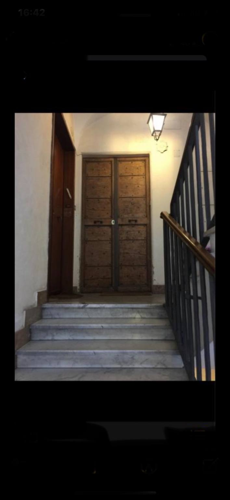

2) Intercom
At the entrance, use the intercom and ring the bell marked 16.

Address: Via Arenula 16, Rome
Intercom: Buzzer 16 — Elevator: private, do not use
Call if help needed: +39 345 587 9366
When you reach Via Arenula 16, look for the large wooden entrance door with the number 16 engraved on the stone frame.
At the entrance, use the intercom and ring the bell marked 16.
Once inside, walk straight down the hallway until you reach the staircase.
The keys are stored in a key safe located near the entrance of the apartment. Follow the instructions provided for the code.

After retrieving the keys, go to the apartment door and open it with the provided set.
You can also open the building door directly from here:
🚪 Open Building DoorEnjoy your stay!